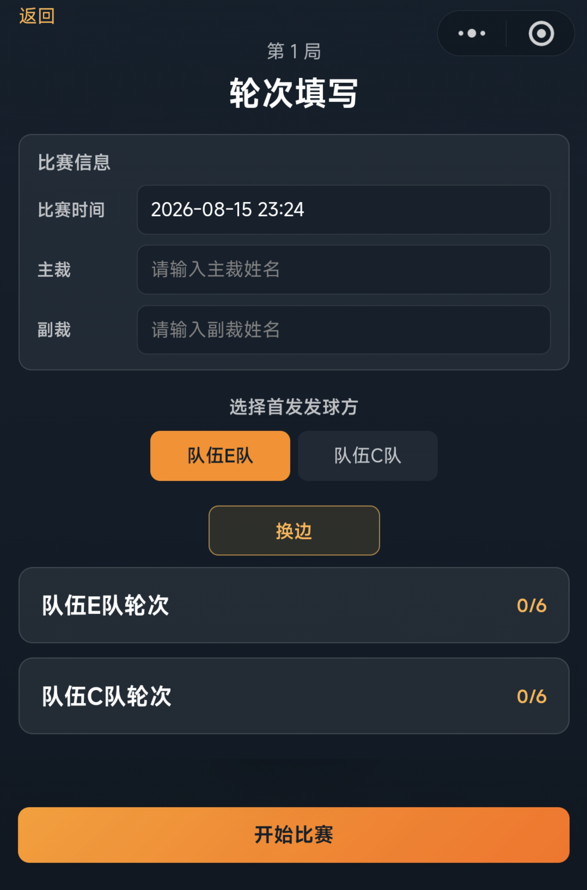
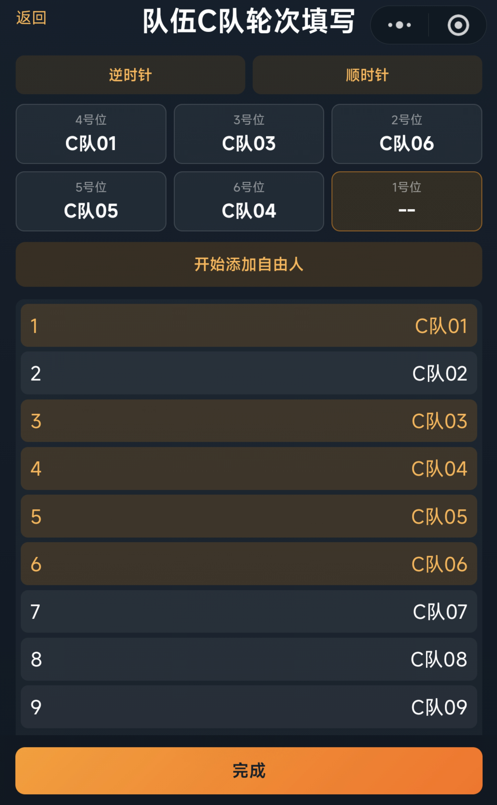
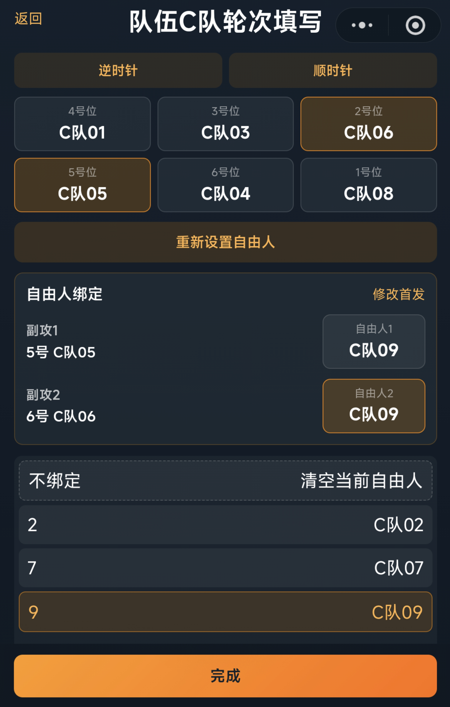
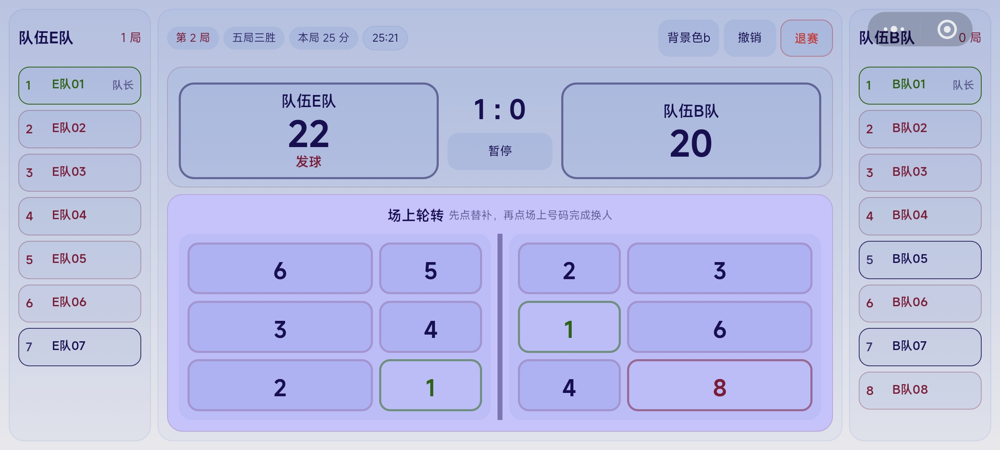
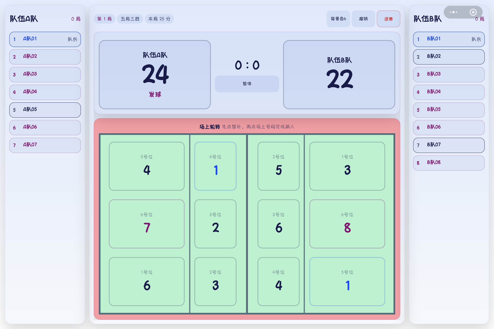
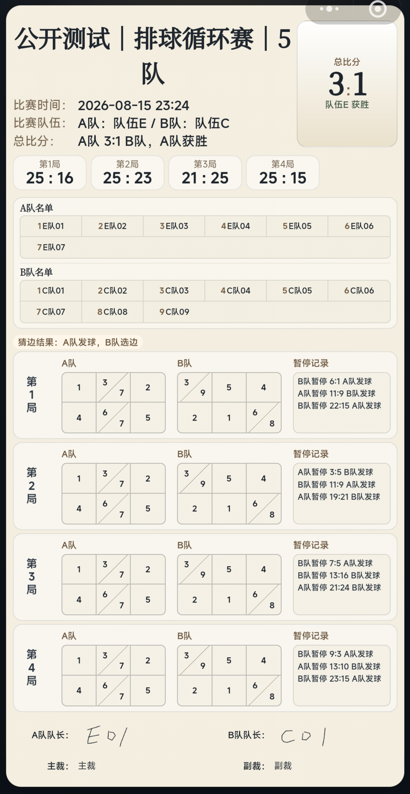

队伍成员：每支队伍需要录入至少 6 名队员。
号码与队长：队内球员号码不能重复，每支队伍需指定 1 名队长。
排球赛事固定以队伍为参赛单位。相比普通计分，排球现场还需要处理发球权、轮转、自由人、换人、暂停、换边和队长变更。系统把这些状态放在同一套流程中，从队伍录入、轮次填写到现场计分和赛后战报形成闭环。
创建排球赛事时，先录入队伍和成员，为后续轮次填写、计分板和战报提供基础信息。
队伍成员：每支队伍需要录入至少 6 名队员。
号码与队长：队内球员号码不能重复，每支队伍需指定 1 名队长。
每局开始前，系统要求先填写或确认双方轮次，再进入计分板。
比赛开始前，记录主裁、副裁姓名以及比赛时间。
每局开始前，双方分别填写本局轮次，包含1 至 6 号位首发队员，可设置自由人。由裁判确认本局初始发球方以及左右场地归属。
自由人绑定：首发六个位置队员选定后需确认其中的副攻人选，为其绑定自由人。系统支持为两位副攻绑定不同的自由人，或一位绑定自由人而另一位不绑定。
局间继承：每局结束后，系统会默认保留之前的轮次设定，双方队长可在局间对轮次进行调整，每局的轮次信息都会被保存。



排球计分板页面为手机端和 Pad 端不同的展示布局。
自动处理发球权和轮转：采用每球得分制。发球方得分时继续发球；接发方得分时，系统切换发球权，并推动该队顺时针轮转。
副攻/自由人轮换：比赛中系统跟随轮转，自动判断副攻和自由人何时上场或换下。
实时更新场上状态：每次轮转后，系统会重新计算场上六人站位和自由人状态，并实时更新沙盘展示。
现场执裁操作：裁判可在计分板中实时完成加分、撤销、暂停、换人等操作。
交换场地提示：首局或决胜局开始前可手动换边；每局间默认交换场地；决胜局任一方达到本局目标分的一半时，系统提示是否交换场地。按默认规则，通常在 8 分时提示。
换人操作：裁判先选择替补，再选择要被换下的场上号码。系统记录换人事件，并同步检查自由人和队长状态。
场上队长确认：如果原队长被换下或不在场上，系统会要求从场上队员中确认新的场上队长。




系统会把比赛中的关键动作作为事件保存，方便赛后确认和归档。
暂停记录：每局双方各有 2 次暂停额度，系统记录暂停发生时的比分。
事件同步：换人、暂停等操作都会写入比赛事件。结算前系统会检查事件同步状态，减少现场数据遗漏。
排球赛事使用单独的排名模板体系，不与羽毛球个人赛或团体赛排名规则混用。
排球专项指标：可用指标包括胜场、比赛积分、净胜局、得失分比和胜负关系等。
预设模板：FIVB 模板使用3-1-0 积分制，常用顺序为“胜场 → 比赛积分 → 胜负局比 → 得失分比 → 胜负关系”。也可以按办赛需要自定义指标顺序。
赛后战报：排球战报展示总比分、每局比分、双方名单、每局轮次、暂停和换人记录等信息，保留双方队长与裁判签名区域，签名完成后由裁判确认封存。
